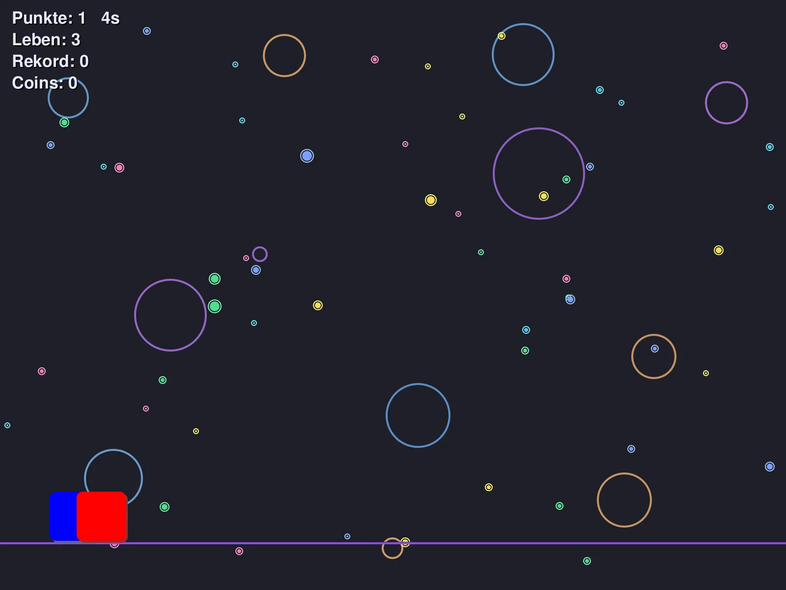
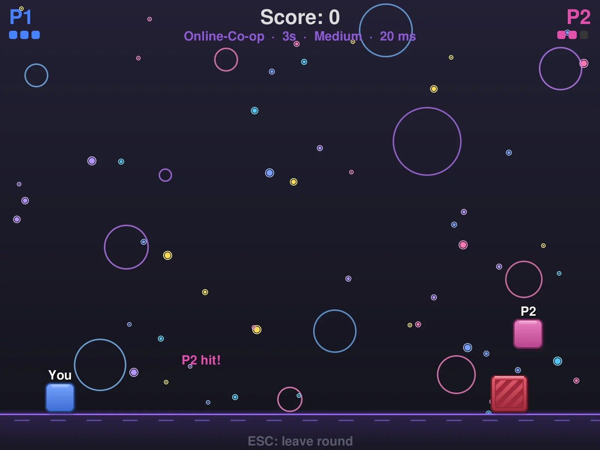

Springen. Ausweichen. Überleben.Jump. Dodge. Survive.
Spring über Hindernisse, weich aus, was von oben kommt, und halte so lange durch wie möglich – allein, zu zweit an einer Tastatur oder online gegen und mit deinen Freunden. Jump over obstacles, dodge what falls from above and survive as long as you can – alone, with two players on one keyboard, or online against and with your friends.
VersionVersion · Windows · Linux · macOS · kostenlosfree

Alles drinEverything included
Schnell gestartet, einfach zu lernen, schwer zu meistern.Quick to start, easy to learn, hard to master.
Acht SchwierigkeitenEight difficulties
Von Leicht bis Hölle – und Dynamisch, das immer schneller wird, je länger du durchhältst.From Easy to Hell – and Dynamic, which gets faster the longer you survive.
Powers und KosmetikPowers and cosmetics
Powers erdrehen, Spuren, Hüte und Gesichter ausrüsten und in der Runde zeigen.Spin for powers, equip trails, hats and faces and show them off.
Zu zweitTwo players
Koop und Versus an einer Tastatur – oder online über das Internet.Co-op and versus on one keyboard – or online over the internet.
Online-RanglisteOnline leaderboard
Highscores vergleichen, Freunde, Squads und Nachrichten.Compare high scores, friends, squads and messages.
Flüssig auf jedem BildschirmSmooth on every screen
So viele Bilder, wie dein Monitor kann (144/165 Hz …), scharf bei jeder Skalierung und im Vollbild.As many frames as your monitor can show (144/165 Hz …), sharp at any scaling and in fullscreen.
Aktualisiert sich selbstUpdates itself
Neue Versionen werden beim Start gefunden und mit einem Klick installiert. Oder über W Hub.New versions are found on start and installed with one click. Or use W Hub.
Replays und Rekord-GeistReplays and best-run ghost
Jede Runde nochmal ansehen – und gegen deinen eigenen Rekordlauf antreten, der halbtransparent mitläuft.Watch every round again – and race your own best run, shown as a ghost.
Controller
Xbox, PlayStation und andere Gamepads – auch zwei für den 2-Spieler-Modus.Xbox, PlayStation and other gamepads – two for the 2-player mode, too.
Lua-ModsLua mods
Eigene Hindernisse, Spielwerte und Modi als kleine .lua-Datei – sicher in einer Sandbox.Your own obstacles, game values and modes as a small .lua file – safely sandboxed.

Online zu zweitOnline with a friend
Online → Multiplayer: Raum erstellen, Code an deinen Freund schicken, beide auf „Bereit“ – los geht's. VS (wer länger überlebt, gewinnt) oder Koop (gemeinsam punkten, mit einem 1-UP holst du deinen Partner zurück). Online → Multiplayer: create a room, send the code to your friend, both press “Ready” – go. Versus (last one standing wins) or co-op (score together, a 1-UP brings your partner back).
- Offizieller Server oder Verbinden per IP/HostnameOfficial server or connect by IP/hostname
- Deine Figur reagiert sofort, auch bei PingYour player reacts instantly, even with ping
- Rematch mit einem KlickRematch with one click
Download
Immer die neueste Version direkt von GitHub. Am einfachsten installierst und aktualisierst du alles mit W Hub.Always the latest version straight from GitHub. The easiest way to install and update is W Hub.
| SystemSystem | DateiFile | |
|---|---|---|
| Windows Installerinstaller | JumpNDodge-windows-x64-setup.exe | Download |
| Windows portabelportable | JumpNDodge-windows-x64.zip | Download |
| Linux Debian, Ubuntu, Mint | jumpndodge_amd64.deb | Download |
| Linux Arch, Manjaro | jumpndodge-x86_64.pkg.tar.zst | Download |
| Linux portabelportable | jumpndodge-linux-x86_64.tar.gz | Download |
| macOS Apple Silicon (M1–M4) | JumpNDodge-macos-apple-silicon.dmg | Download |
| macOS Intel | JumpNDodge-macos-intel.dmg | Download |
Ältere Versionen (auch die Python-Version) gibt es im Archiv.Older versions (including the Python version) are in the archive.
FAQ
Ich habe schon die alte Version – geht mein Spielstand verloren?I already have the old version – will I lose my progress?
Nein. Die Rust Edition liest denselben Spielstand. Der Installer aktualisiert deine bestehende Installation an Ort und Stelle, der Ordner data bleibt. Der alte Updater holt sich die neue Version sogar von selbst.No. The Rust Edition reads the same save file. The installer updates your existing installation in place and keeps the data folder. The old updater even fetches the new version by itself.
Was ist die „Rust Edition“?What is the “Rust Edition”?
JumpNDodge wurde komplett von Python nach Rust übertragen: startet sofort, eine einzige Datei, flüssiger, schärfer, mit Online-Multiplayer und eingebautem Updater. Ab Version 5.0 ist das die Hauptversion.JumpNDodge was fully rewritten from Python in Rust: starts instantly, a single file, smoother, sharper, with online multiplayer and a built-in updater. From version 5.0 it's the main version.
macOS sagt, die App kann nicht geöffnet werdenmacOS says the app can't be opened
Die App ist nicht von Apple beglaubigt. Beim ersten Start Rechtsklick auf JumpNDodge → Öffnen → Öffnen. Danach startet sie normal.The app isn't notarized by Apple. On first start right-click JumpNDodge → Open → Open. After that it starts normally.
Wo liegt mein Spielstand?Where is my save?
Windows und portabel: im Ordner data neben dem Spiel. Linux-Paket: ~/.local/share/JumpNDodge/data. macOS: ~/Library/Application Support/JumpNDodge/data.Windows and portable: in the data folder next to the game. Linux package: ~/.local/share/JumpNDodge/data. macOS: ~/Library/Application Support/JumpNDodge/data.
Gibt es Mods?Are there mods?
Ja – Lua-Mods: Hauptmenü → Mods → „Beispiel-Mod anlegen“. Mods laufen in einer Sandbox ohne Zugriff auf Dateien oder Netzwerk; Runden mit Mods zählen getrennt und nicht online. Die alten Python-Mods (.py) laufen nur in der Python-Version im Archiv.Yes – Lua mods: main menu → Mods → “Create example mod”. Mods run in a sandbox without access to files or the network; rounds with mods are counted separately and not online. The old Python mods (.py) only run in the Python version in the archive.